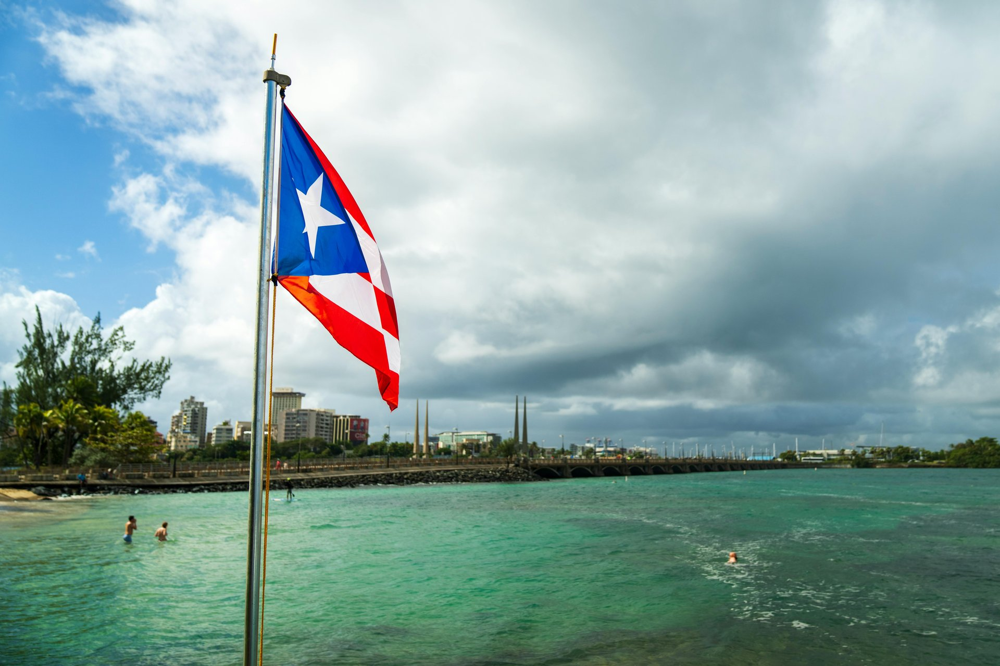

Bosque Seco de Guánica: Puerto Rico's Ancient Dry Forest

Most people arrive in Puerto Rico expecting lush jungle, and El Yunque delivers exactly that. But on the southwest coast, protected from the northeast trade winds by the island's central mountains, a completely different ecosystem exists: a dry tropical forest where cacti grow alongside gnarled hardwood trees, the canopy is open, and the light has a clarity unlike anything you'll find in the rain-soaked east.
A UNESCO Biosphere Reserve
Bosque Seco de Guánica received its UNESCO Biosphere Reserve designation in 1981, recognized as one of the finest examples of subtropical dry tropical forest anywhere in the world. The forest covers several thousand acres near the city of Guánica on Puerto Rico's south coast, protected under Puerto Rico's Department of Natural and Environmental Resources. While El Yunque sees hundreds of thousands of visitors annually, Guánica is rarely crowded — on a weekday morning, you may have its trails almost entirely to yourself.
The Ecosystem
The difference between Guánica and El Yunque is essentially rainfall. El Yunque receives over 100 inches annually and stays green through drought. Guánica receives roughly 30 inches per year, and some months pass with almost no rain at all. The result is a forest that looks markedly different: many of the trees are deciduous, dropping their leaves in the dry season to conserve moisture. The understory opens up. Cacti — including several native species — grow alongside tree ferns and succulent plants. The forest floor is dusty and pale in the dry season, then erupts into color after seasonal rains.
Guánica harbors over 700 plant species in its various zones, more than half of them native. Approximately 16 species here are classified as endangered. It is also important bird habitat: more than 130 bird species have been recorded in the reserve, including the Puerto Rican nightjar, one of the rarest birds in the Caribbean, which nests in the dry forest and is almost never seen elsewhere.
The Coast Below
The forest meets the sea at a rocky shoreline with several small coves. The clear, calm waters below the cliffs offer some of the best snorkeling on Puerto Rico's south coast — the dry climate means fewer rivers carrying sediment and nutrients into the sea, resulting in clearer water and visibility that often exceeds what you find on the more visited east coast. Several operators in Guánica town run snorkel tours along the reserve's shoreline.
Practical Notes
Guánica is about 40 minutes from Ponce and 30 minutes from La Parguera — natural companions for a day on the south coast. The forest is free to enter and has maintained trails, though signage varies. Go early in the morning to avoid heat and to maximize bird activity. Bring more water than you think you'll need — the dry climate is deceptively demanding.
Frequently Asked Questions
Why is Bosque Seco de Guánica a UNESCO Biosphere Reserve? Guánica was designated in 1981 for its exceptional dry tropical forest — one of the best-preserved examples of this globally threatened ecosystem.
How does it differ from El Yunque? El Yunque receives over 100 inches of rain annually. Guánica receives roughly 30 inches, producing cacti, deciduous trees, and open canopy rather than dense jungle.
Related Reading
- Cabo Rojo Salt Flats & Los Morrillos Lighthouse
- La Parguera: The Quieter West Coast
- El Yunque: America's Only Tropical National Forest
Explore Puerto Rico's south coast waters
See Snorkeling Tours →